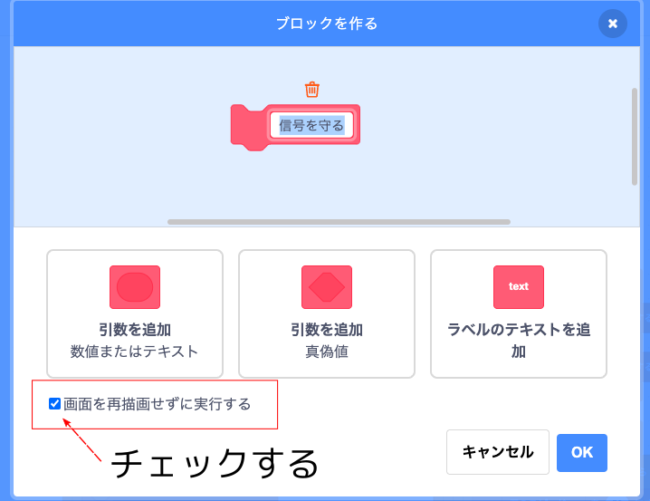
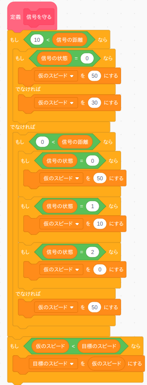
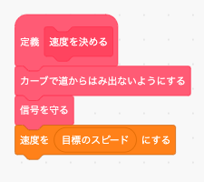
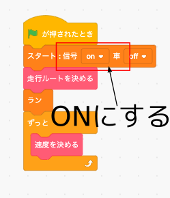

次は赤信号で止まるようなプログラムを作ってみましょう。
本物の車の場合は超高精度3Dマップやカメラなどのセンサーによって信号の状態を取得しますが、このシミュレータでは「信号の距離」「信号の状態」変数ブロックで信号の状態を取得できます。
「信号の距離」は次のカーブまでの距離(メートル)が取得できます。
| 「信号の距離」 の数値 | 内容 |
|---|---|
| 10000 | しばらく信号が無い |
| 1〜9999 | 信号までの距離(メートル) |
| 0 | 信号の真下にいる |
「信号の状態」は青か黄色か赤かを次の数値で取得できます。
| 「信号の状態」 の数値 | 内容 |
|---|---|
| 0 | 青 |
| 1 | 黄色 |
| 2 | 赤 |
ではまた「もし〜なら」ブロックの条件をミーシー思考を使って考えてみましょう、と言いたいところですが、いま手元にある情報( ＝ 変数 )は「ナビの距離」「ナビの方向」「信号の距離」「信号の状態」の4つまで増えました。 なのでさっきと同じような表をつくろうとするととんでもなく巨大なものができてしまいます。
この様に手元にある情報が増えてきた場合は"ミニ・マックス思考"というプログラミングテクニックと先ほどのミーシー思考を組み合わせて「もし〜なら」ブロックの条件を考えるのが常套手段になります。
ミニ・マックス思考は "情報を分割し、違う条件のもとでリスクが高い値をいくつか求めて、その中から一番リスクが低い値を採用する" という方法です。
と言ってもよく分かりませんね。 では具体的に条件を求めていきましよう。
まずこのページでつくるプログラムの目的は"信号を守る"ことですので、"信号を守る"ことに関係ない情報は全て無視します。 つまり"カーブは存在しない"ということにし、「ナビの距離」「ナビの方向」を使わないで「信号の距離」「信号の状態」だけ使って先ほどのような表をつくります。
目的：信号を守る
必要な情報：「信号の距離」「信号の状態」
必要で無い情報：「ナビの距離」「ナビの方向」
また「目標のスピード」変数ブロックに直接スピードの値を入れてしまうとカーブのときにまた道からはみ出してしまうので、「仮のスピード」という名前の変数ブロックを新しく作って、とりあえずその変数に値を入れることにします。
すると表は次のようになります。
| 「信号の距離」 | 「信号の状態」 | 「仮のスピード」 |
|---|---|---|
| 10 より大 (遠い) |
0 (青) | 50 |
| 1 (黄色) | 30 | |
| 2 (赤) | 30 | |
| 10以下、0より大 (直前) |
0 (青) | 50 |
| 1 (黄色) | 10 | |
| 2 (赤) | 0 | |
| 0 (真下) |
0 (青) | 50 |
| 1 (黄色) | 50 | |
| 2 (赤) | 50 |
0(真下)の時に「仮のスピード」を50にしてるのは、いったん交差点に入ってしまったらさっさと抜けてしまおうという意味です。
さてこの表は結構大きくて無駄がありますし、"〜以下、〜より大"は「もし〜ならば、でなければ」ブロックを使って置き換えることが出来ますので、次のように簡単にすることが出来ます。
| 「信号の距離」 | 「信号の状態」 | 「仮のスピード」 | 10より大 (近い) |
0 (青) | 50 |
|---|---|---|---|
| でなければ (青以外) | 30 | ||
| でなければ | |||
| 0より大 (直前) |
0 (青) | 50 | |
| 1 (黄色) | 10 | ||
| 2 (赤) | 0 | ||
| でなければ (真下) | 情報をつかわない | 50 | |
これで「もし〜なら」ブロックの条件が分かりましたので早速プログラミングしてみましょう。
※ 走行画面は動作が重いので、プログラミングはストップボタンを押してからタイトル画面でしてください。
まず「信号を守る」というオリジナルブロックを作ります。 このブロックは繰り返し使いますので「画面を再描画せずに実行する」をチェックしてください。
「信号を守る」ブロックの中身は上の表から次のようになります。 表の内容と「もし〜なら」ブロックの条件がまったく同じになっていますね。

ところで一番最後に表にないプログラムが混ざってますね。
(↓これ)
ここが"情報を分割し、違う条件のもとでリスクが高い値をいくつか求めて、その中から一番リスクが低い値を採用する"というミニ・マックス思考の部分で、前のページで求めたカーブの時のスピードと、今回求めた信号の時のスピードのうちで事故るリスクが低い、つまりスピードが低い方を「目標のスピード」にセットしています。
あとは「速度を決める」ブロックを次のように変更すればOKです。
ただこのままでは実行しても信号が出ませんので、「スタート」ブロックで信号をONにするのを忘れないで下さい。
では「緑の旗」ボタンを押してテストしてみましょう。
正しく動いたら「ストップ」ボタンを押してタイトル画面に戻って下さい。